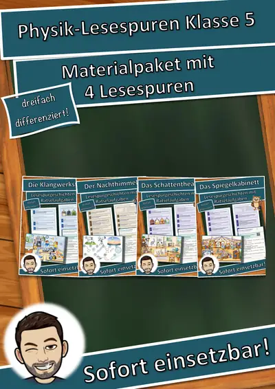
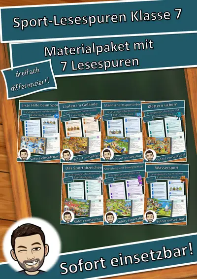

Materialpaket Lesespurgeschichten Physik Klasse 7: 6 Lesespuren mit Rätselaufgaben, dreifach differenziert
6 Lesespuren für die 7. Klasse – im Paket günstiger als einzeln
Mit diesem Materialpaket bekommst du 6 meiner Lesespurgeschichten für die 7. Klasse aus dem Fach Physik in einem Download. Alle Lesespuren sind sofort einsetzbar, dreifach differenziert (leicht ★ / mittel ★★ / schwer ★★★) und jeweils in Farbe und Schwarz-Weiß enthalten. So arbeitet deine ganze Klasse am selben Thema, und jedes Kind liest auf seinem Niveau.
Preisvorteil: Einzeln gekauft kosten die 6 Materialien regulär zusammen 23,94 €. Im Paket zahlst du nur 11,97 € und sparst damit rund 50 %.Die 6 Materialien im Paket
Das Licht und die Farben (Klasse 7 – Physik): Die Kinder begleiten Lena und Jonas und den Museumsführer Leo – von der Lichtquelle über Prisma, Spiegelkabinett, Linsen-Station, Schattentheater und Farbmisch-Station bis zum Laser-Raum und zum großen Auge-Modell – und lernen dabei ganz nebenbei die Grundlagen der Optik kennen.
Der Magnetismus (Klasse 7 – Physik): Die Kinder begleiten den jungen Forscher Tom von der Magnet-Station über Kompass, Eisenspäne, Nord- und Südpol, Anziehung und Abstoßung, den Elektromagneten und das Erdmagnetfeld bis zur Sortier- und Alltags-Station – und verstehen dabei ganz nebenbei, wie Magnete wirken und warum sie manche Dinge anziehen und andere nicht.
Der Mond (Klasse 7 – Physik): Die Kinder begleiten die junge Sternforscherin Mara von der Sternwarte über die Umlaufbahn, den Neumond, das erste Viertel, den Vollmond und das letzte Viertel bis zur Sonne, zur Erde und zur Mondfinsternis – und verstehen dabei ganz nebenbei, warum der Mond immer wieder anders aussieht.
Die Physik-Werkstatt (Klasse 7 – Physik): Die Kinder begleiten Lena und Jonas und die Schülerin Pia – vom Hebel über Flaschenzug, schiefe Ebene, Zahnräder, Reibungs-Station und Federwaage bis zum Pendel und zur Seilwinde – und erforschen dabei ganz nebenbei Kräfte und einfache Maschinen.
Der Stromkreis (Klasse 7 – Physik): Die Kinder begleiten Lena und Jonas und den Elektro-Lehrling Timo – von der Stromquelle über Kabel, Glühlampe, Steckdose, Reihenschaltung und Parallelschaltung bis zum Elektromotor und zur Klingel – und lernen dabei ganz nebenbei, wie ein Stromkreis funktioniert.
Schwimmen und Sinken (Klasse 7 – Physik): Die Kinder begleiten die junge Forscherin Pia von der Wasserwanne über Korken und Stein, Schiff, Schwimmreifen und Münze bis zum U-Boot und zum Fisch – und verstehen dabei ganz nebenbei, warum manche Dinge schwimmen und andere sinken und welche Kraft des Wassers dabei mitwirkt.
Lehrplanbezug (LehrplanPLUS Bayern, Mittelschule, Jahrgangsstufe 7)Deutsch – Lesen, mit Texten und weiteren Medien umgehen: Die Kinder lesen sinnentnehmend, wenden Lesestrategien an und entnehmen gezielt Informationen, denn nur wer genau liest, findet die nächste Station.
Deutsch – Sprechen und Zuhören: Das Hörverstehen per QR-Code schult konzentriertes Zuhören; Gespräche über Bräuche und Sachthemen fördern das Erzählen und Begründen.
Deutsch – Schreiben: Die Kinder beantworten Fragen schriftlich, füllen Steckbriefe aus und notieren Lösungen.
Physik: Das Licht und die Farben, Der Magnetismus, Der Mond, Die Physik-Werkstatt, Der Stromkreis, Schwimmen und SinkenSo funktioniert eine Lesespur
Die Kinder lesen ab START einen kurzen Abschnitt. Am Ende verrät ein Hinweis den nächsten Ort, den sie auf dem farbigen Plan suchen. Dort lesen sie weiter. An jeder richtigen Station sammeln sie einen Buchstaben, und eingeplante Sackgassen dienen der Selbstkontrolle. Am Ende ergeben die umgestellten Buchstaben ein geheimes Lösungswort.
Das ist in jeder Lesespur enthalten
Lesespurgeschichte in 3 Niveaus (leicht ★, mittel ★★, schwer ★★★)farbiger Plan als Suchkarte
Rätselaufgaben auf dem Weg, z. B. Zuordnen, Quiz, Rechenaufgabe und Steckbrief
Hörverstehen mit QR-Code zum Hörtext
Rätselseite mit Wörter-Suchsel und Wissensfragen
Ausmalbild zum Themaausführliches Lösungsblatt für die Lehrkraftalles zusätzlich als drucksparende Schwarz-Weiß-Variante
Insgesamt umfasst das Paket 282 Seiten.
Einsatzmöglichkeiten
Alle Materialien passen das ganze Schuljahr über, auch als Thema der Woche oder Werkstatt. Du kannst sie im Stationenlernen, in Freiarbeit und Wochenplan, in der Leseförderung und in Förderstunden einsetzen. In Vertretungsstunden funktionieren sie ohne Vorbereitung. Sie eignen sich für alle Schulen in allen Bundesländern.
Viel Freude mit deiner Klasse wünscht dir Snice!
Ähnliche Materialien

Materialpaket Lesespurgeschichten Physik Klasse 5: 4 Lesespuren mit Rätselaufgaben, dreifach differenziert

Optik – Licht und Sehen – Prüfungstraining Physik (Klasse 8)

Physik Lückentext mit Wortspeicher Hörverstehen und Suchsel

Materialpaket Winter und Advent für die 7. Klasse: 10 Lesespurgeschichten mit Rätselaufgaben fächerübergreifend (Weihnachtsoratorium, Südpol, Eishockey & mehr)

Die Physik-Werkstatt – Lesespurgeschichte mit Rätselaufgaben (Klasse 7)

Materialpaket Lesespurgeschichten Technik Klasse 7: 3 Lesespuren mit Rätselaufgaben, dreifach differenziert

Materialpaket Lesespurgeschichten Sport Klasse 7: 7 Lesespuren mit Rätselaufgaben, dreifach differenziert